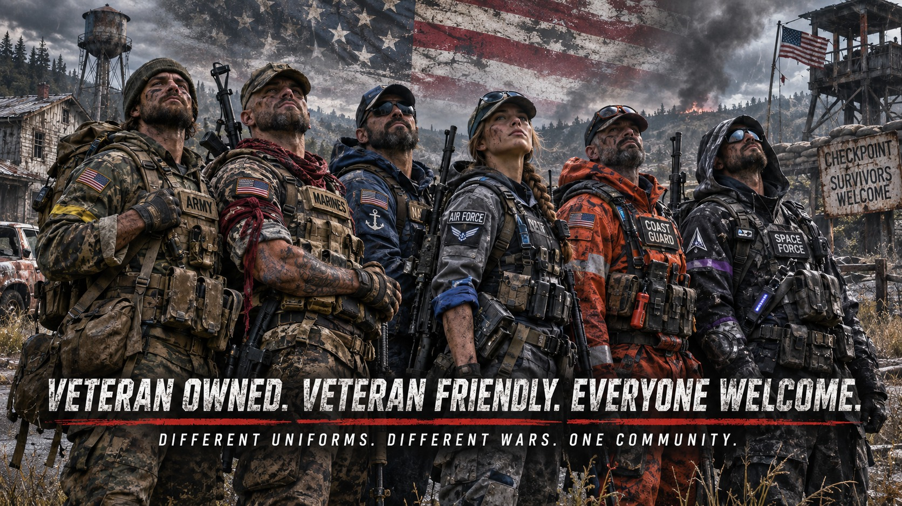

BASE BUILDING
Settle down, claim your territory, and make a home in the wasteland.

A veteran-owned DayZ survival community built on camaraderie, respect, loyalty and grit. Whether you served, are still serving, or never wore a uniform, there is a place for you here.
Build a home, collect your dream rides, and make your own story in the Territory.
Settle down, claim your territory, and make a home in the wasteland.
Discover custom rides and build out your collection.
Trade supplies, gear, and useful items with in-game traders.
Head into the wild, hunt animals, and make every trip count.
Visit the FAFO Territory Black Market for exclusive SNAFU firearms you won’t find at our regular traders. Serious firepower, all within our PvE server.
A growing PvE community where the journey matters as much as the destination.
Survival demands the right equipment. SNAFU Weapons brings an expanded selection of firearms to the Territory, giving survivors more ways to gear up and take on the wilderness.
More than a DayZ server. A place to belong. Veterans, active-duty military, first responders, military families and civilians are welcome. No mandatory military roleplay. No rank pulling. No unnecessary bullshit. Just good people surviving a brutal world together.
Your service is respected. Your stories are yours to share. Your place in our community is earned through your character, not your rank.
United in survival. Respected in service.
United in survival. Respected in service.
United in survival. Respected in service.
United in survival. Respected in service.
United in survival. Respected in service.
United in survival. Respected in service.
National Guard, Reserves, allied military forces, first responders, military families and civilian supporters are welcome here.
We are developing a veteran recognition program with optional Discord service roles, a Veterans Lounge, appreciation events, in-game incentives, a Battle Buddy Program and community memorials.
Respect. Loyalty. Camaraderie. Integrity.
Help the new guy. Respect fellow survivors. Keep the fights in the game. Stand beside those who stand beside you.
Visit No Man's Land Trading Co. and the Black Market.
Stock up on the essentials to survive the wilderness—food, tools, medical supplies, clothing, and gear for life in the wild.
Looking for serious firepower? The Black Market is your destination for exclusive SNAFU weapons—powerful, sought-after guns for survivors who want to gear up beyond the ordinary. Find your next favorite weapon in the Territory, all within our PvE server.
Community guidelines are listed below. For the complete, current server rules, check our Discord.
At FAFO Territory, we keep survival as realistic and authentic as possible. This is a gritty, grounded survival server — not a fantasy world.
No futuristic weapons, spaceships, laser guns, or ridiculous technology.
No werewolves, vampires, monsters, or supernatural creatures.
No cartoonish vehicles, fantasy gear, or anything that doesn't belong in an authentic survival environment.
Realistic weapons, military gear, vehicles, challenging survival, and a believable post-apocalyptic atmosphere.
FAFO TERRITORY — REAL SURVIVAL. NO FANTASY. NO NONSENSE.
You do not need a military background to call FAFO home. Join a community built on respect, teamwork and survival. Donations are optional and do not provide gameplay advantages.
LINKS section of this site's HTML. Buttons are deliberately inactive until configured.